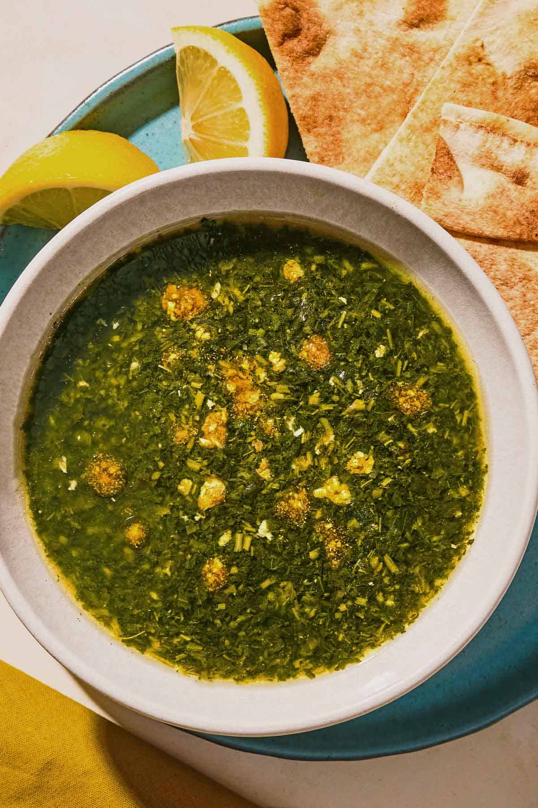

Molokhia

Description
Molokhia is a traditional garlicky green soup that serves as an Egyptian household staple and a centerpiece of gathering feasts.
Made using minced jute mallow leaves cooked into a savory,
well-seasoned broth, it has a signature smooth texture—similar in consistency to okra—and a rich,
earthy flavor reminiscent of wild spinach.
Ingredients
- 2 Tablespoons ghee. Note1
- ½ Tablespoon crushed garlic. 2-3 lardge garlic cloves.
- 1 ½ Tablespoon dry coriander.
- 1 cube chicken bouillon.
- 2-3 cups chicken broth divided.
- ¼ teaspoon baking soda
- 2 Tablespoons to ¼ cup tomato sauce.
- 1 package of Molokhia
- Salt to taste
steps
- In a deep pot over medium-high heat melt ghee then sauté garlic for 15-30 seconds until lightly golden and fragrant. Add coriander and keep stirring for another 30 seconds.
- Pour in one and half cups broth and sprinkle the bouillon cube.
- Stir everything together until bouillon is dissolved. Stir in the baking soda if using.
- Add the Molokhia, and turn down the heat to medium low,. Using a whisk stir until the Molokhia has melted completely in the broth.
- Pour in the tomato sauce and still well.
- Check consistency of the Molokhia, It is going to be thick. If you like it that way then do not add any more broth but if you want it thinner then add broth until you reach the consistency you love.
- Now Check the taste if you need more sweetness and tartness add more tomato sauce. If it needs more salt add salt to your liking
- Continue cooking Molokhia until the leaves are cooked and does not taste raw anymore.
- Molokhia is usually done when it just starts boiling all over on low heat.
- Do not cover Molokhia immediately, let it cool down completely before covering or serve directly with rice, chicken and pita bread.
Back to Home